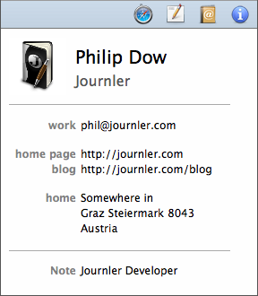

Address Book Integration
Address Book Integration

Journler integrates beautifully with Address Book. A built-in contacts browser is available from inside Journler so you can quickly
add friends and associates to your entries. When you select one of those contacts, Journler displays it in a native format right inside
your journal. And of course, your contacts are included in searches along with the rest of your media.
Adding contacts to an entry
It's so easy. From the Window menu at the top of your screen choose Address Book about halfway down. Journler displays the Address Book browser from which you may drag a contact to an entry. Alternatively, you may add an Address Book button your toolbar. Customize the window's toolbar via the View > Customize Toolbar... menu item.